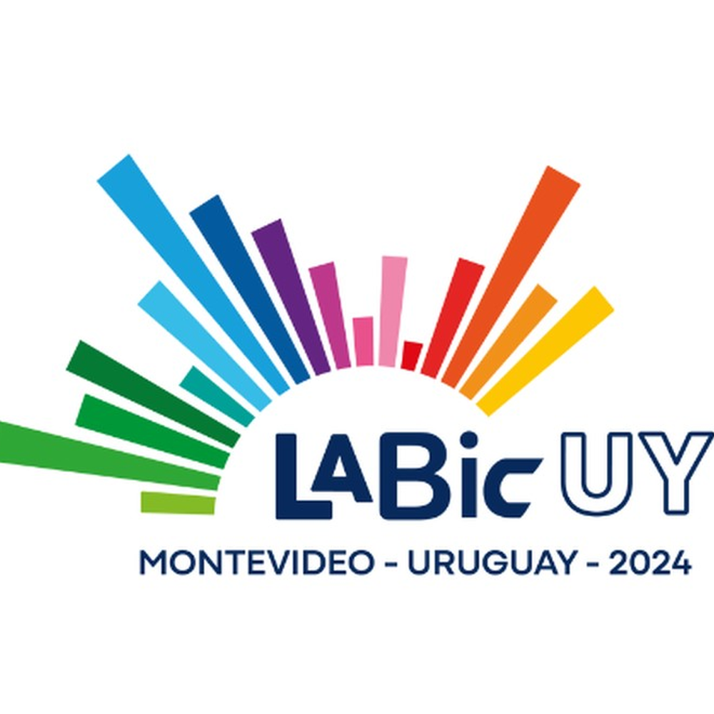

Proyecto
LABIC-UY / SEGIB / Ceibal
Laboratorio de Innovación Ciudadana Uruguay
Prototipo de soluciones educativas, digitales y cívicas en un laboratorio iberoamericano.
Socios: SEGIB, Ceibal, LABIC-UY

Detalles
- Alcance
- Cocreación de propuestas tecnológicas y metodológicas alineadas con las demandas reales de las escuelas y comunidades locales.
- Contexto
- Laboratorio con profesionales de Iberoamérica, enfocado a la innovación ciudadana y el sector educativo uruguayo.